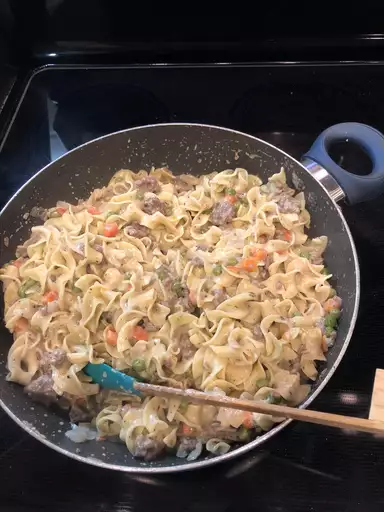

Beef Stroganoff

Prep Time: 5 mins | Cook Time: 15 mins | Total Time: 25 mins | Servings: 4
Description:
Beef stroganoff is an iconic Russian dish that consists of beef in a creamy sauce. According to legend, it was created by chefs who worked for the Stroganov family in the 1800s. The dish is often made with mushrooms and served over rice or egg noodles.
Traditional beef stroganoff is made with steak, a roux-based sauce, and sauteed mushrooms. But, as the title suggests, this recipe is simplified. It relies on shortcut ingredients, such as ground beef and canned cream of mushroom soup, to keep the cook time down and to cut down on extra steps.
Ingredients
Remove beef from the heat. Add egg noodles and stir to combine. Stir in sour cream and season with salt and pepper.
- 1 (8 ounce) package egg noodles
- 1 pound ground beef
- 1 (10.5 ounce) can fat-free condensed cream of mushroom soup
- 1 tablespoon garlic powder
- ½ cup sour cream
- salt and ground black pepper to taste
Steps
-
Saute ground beef in a large skillet over medium heat until browned and crumbly; 5 to 10 minutes.
-
At the same time, fill a large pot with lightly salted water and bring to a rapid boil. Cook egg noodles at a boil until tender yet firm to the bite, 7 to 9 minutes. Drain and set aside.
-
Drain and discard any fat from the cooked beef. Stir condensed soup and garlic powder into the beef. Simmer for 10 minutes, stirring occasionally.
-
Remove beef from the heat. Add egg noodles and stir to combine. Stir in sour cream and season with salt and pepper.
Find more recipes here!